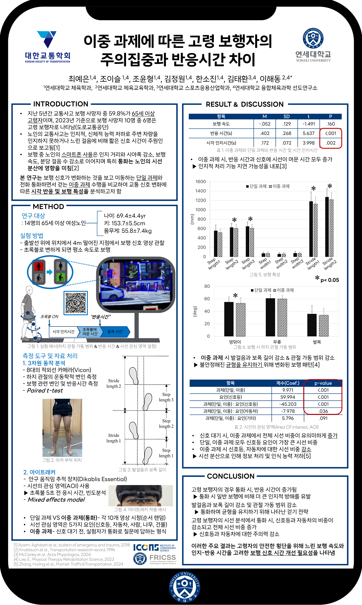

Publications
📄 Journal Articles
Influence of Subjective Health Status on Positive Psychological Capital in Middle-Aged Adults: Mediating Effect of Walking Self-Efficacy Moderated by Exercise Frequency
Han, S., Kim, T., Kim, J., Cho, Y., Choe, Y., & Jo, I. (2025).
Journal of the Korean society for Wellness, 20(2), 395-401. 10.21097/ksw.2025.5.20.2.395
🎤 Conference Papers
2025 KSBB International Conference
Effect of Predictability of Ground Height Perturbations on Neuromechanical Responses of Lower Extremity Joints During Hopping: A Pilot Study

The 92nd Conference of Korean Society of Transportation
The Impact of Dual-Tasking on Visual Attention and Reaction Time in Older Pedestrians

2024 KSBB Fall Conference
Effects of Dual Tasks on 30-Minute Treadmill Walking: Pilot Test
Program Book
National Undergraduate Kinesiology Conference